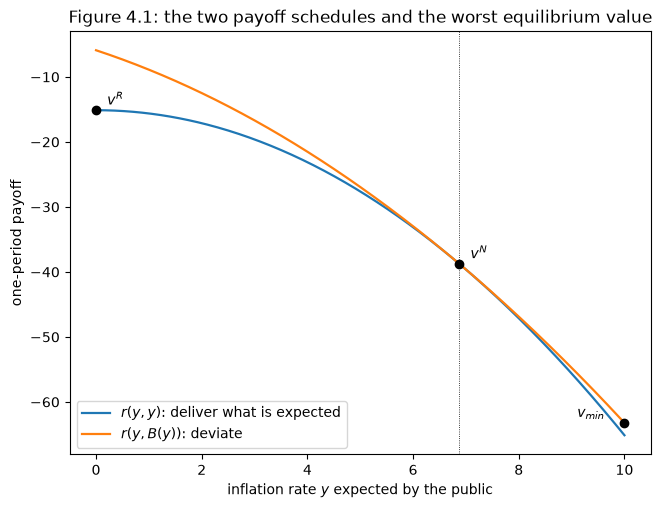
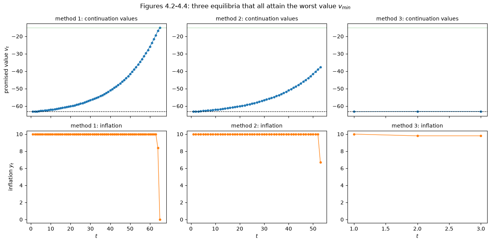
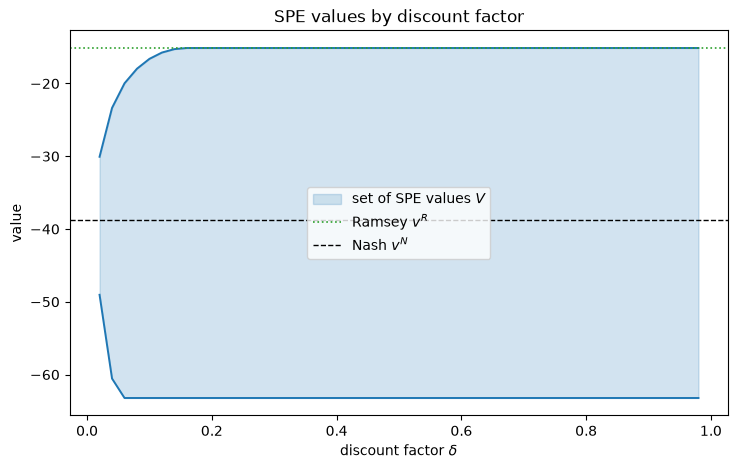

96. 可信的政府政策#
96.1. 概览#
信誉问题 让政府陷入了一个陷阱。
如果没有承诺自身行为的技术手段，一个每期都重新优化的政府最终会落入纳什结果，以 \(\theta U^*\) 的速率通货膨胀，却一无所获。
那是一个单期的故事，它招致了一个显而易见的反驳：一个预期明天将再次面对同一公众的政府，是有”声誉”需要维护的。
本讲座遵循 [Sargent, 1999] 第4章的思路，认真对待这一反驳意见。
我们让基德兰德-普雷斯科特经济永远重复，让政府当期的行动依赖于整个结果历史，并追问哪些结果路径可以作为子博弈完美均衡得到支持。
答案并不是反驳意见所预期的那个。
声誉既没有拯救拉姆齐结果，也没有确认纳什结果。
它带来了均衡值的一个连续统，其中一些优于纳什结果，一些则差得多，而模型内部没有任何原则可以在其中做出选择。
这正是本讲座旨在确立的结论，萨金特用一句话表达出来：
我的结论是，可信计划的多重性用不可知论取代了悲观主义。
这对整个系列讲座的论证都很重要。
美国通货膨胀的兴衰 反对自然率理论胜利这一说法的部分理由，正是建立在这一弱点之上：一个具有如此多均衡的理论几乎不能做出任何预测，因此依赖于政策制定者已经学到了正确均衡的故事，实际上是在为理论本身无法完成的工作做辩护。
96.1.1. 我们要构建什么#
所使用的机制是阿布鲁、皮尔斯和斯塔凯蒂 [Abreu, 1988, Abreu et al., 1990] 的递归方法，它计算的不是一个最优值，而是整个均衡值的集合。
普通的动态规划迭代一个将延续值映射为值的算子。
APS 迭代的算子将延续值的集合映射为值的集合，而子博弈完美均衡值的集合正是它的最大不动点。
备注
将一个承诺值作为状态变量，然后在该状态下进行动态规划，这种技巧有时被称为双重动态规划。
这是 QuantEcon 关于 斯塔克尔伯格计划 讲座以及 [Ljungqvist and Sargent, 2018] 中拉姆齐问题递归处理方法的核心思想。
本讲座是一个精简的示例：状态是一个承诺值，我们所计算的对象是一个集合。
接下来我们以三种方式使用这一机制。
我们通过猜测-验证法构造特定的均衡——纳什结果的无限重复、某种更优结果的无限重复，以及阿布鲁的”大棒加胡萝卜”策略，这一策略比纳什结果更差。
我们通过两个小型规划问题计算最优和最差均衡值，并将其与 APS 算子的直接迭代进行核对。
我们还展示了三种截然不同却都达到相同最差值的均衡，这是均衡概念约束力有多弱的最鲜明例证。
备注
萨金特本人给读者的建议值得转达：如果读者之前没有接触过这一理论，本章会显得困难；愿意接受其结论——即可信政策理论带来的是不可知论而非预测——的读者，可以直接跳转到 适应性预期与费尔普斯问题，而不会失去论证的线索。
让我们从导入模块开始：
import matplotlib.pyplot as plt
import numpy as np
from typing import NamedTuple
96.2. 重复经济#
单期经济就是 信誉问题 中的那个经济。
令 \((U, y, x)\) 分别为失业率、通货膨胀率和公众对通货膨胀的预期。
失业率遵循预期增广菲利普斯曲线 \(U = U^* - \theta(y - x)\)，将政府的单期收益写成 \((x, y)\) 的函数为
政府对预期 \(x\) 的单期最优反应为
纳什结果为 \(y^N = \theta U^*\)，拉姆齐结果为 \(y^R = 0\)。
现在有两点新内容。
第一，经济在 \(t = 1, 2, \ldots\) 不断重复，政府按照下式对结果路径 \((x, y) = \{x_t, y_t\}_{t=1}^\infty\) 排序：
因子 \((1-\delta)\) 使 \(V^g\) 与单期收益处于相同的单位，从而使值与单期回报可以直接比较。
第二，通货膨胀被限制在一个有界区间 \(Y = [0, y^\#]\) 内。
下界是拉姆齐结果；上界 \(y^\#\) 使政府的问题变得非平凡，我们在寻找最差均衡时会看到这一点。
class Model(NamedTuple):
θ: float = 1.25 # slope of the Phillips curve
U_star: float = 5.5 # natural rate of unemployment
y_max: float = 10.0 # y^#, the highest admissible inflation rate
δ: float = 0.95 # discount factor
def r(m, x, y):
"One-period government payoff when the public expects x and inflation is y."
U = m.U_star - m.θ * (y - x)
return -0.5 * (U**2 + y**2)
def B(m, x):
"The government's one-period best response to expected inflation x."
return m.θ * (m.U_star + m.θ * x) / (m.θ**2 + 1)
def y_nash(m):
return m.θ * m.U_star
下面所有的推导都依赖于两个收益方案，两者都是公众已形成预期的单一通货膨胀率 \(y\) 的函数。
第一个是理性预期收益 \(r(y, y)\)：如果政府实现了公众所预期的通货膨胀，它得到的收益。
第二个是背离收益 \(r(y, B(y))\)：如果公众预期为 \(y\)，而政府屈服于诱惑做出最优反应，它得到的收益。
两者都有值得记录的闭合形式，因为它们解释了后面的一切：
def r_keep(m, y):
"Payoff from delivering the expected inflation rate: r(y, y)."
return -0.5 * (m.U_star**2 + y**2)
def r_cheat(m, y):
"Payoff from best-responding to an expectation of y: r(y, B(y))."
return -(m.U_star + m.θ * y)**2 / (2 * (1 + m.θ**2))
m = Model()
ys = np.linspace(0, m.y_max, 7)
print("closed forms agree with the definitions:",
np.allclose(r_keep(m, ys), r(m, ys, ys)),
np.allclose(r_cheat(m, ys), r(m, ys, B(m, ys))))
closed forms agree with the definitions: True True
两个方案都随 \(y\) 上升而下降，但下降速率不同，且恰好在纳什速率处相交，因为在该处背离的诱惑消失了，\(B(y^N) = y^N\)。
grid = np.linspace(0, m.y_max, 400)
yN = y_nash(m)
v_R, v_N = r_keep(m, 0.0), r_keep(m, yN)
v_lo = r_cheat(m, m.y_max)
fig, ax = plt.subplots(figsize=(7.5, 5.5))
ax.plot(grid, r_keep(m, grid), 'C0', lw=1.6, label='$r(y, y)$: deliver what is expected')
ax.plot(grid, r_cheat(m, grid), 'C1', lw=1.6, label='$r(y, B(y))$: deviate')
ax.plot(0.0, v_R, 'ko', ms=6)
ax.annotate('$v^R$', (0.0, v_R), textcoords='offset points', xytext=(8, 4))
ax.plot(yN, v_N, 'ko', ms=6)
ax.annotate('$v^N$', (yN, v_N), textcoords='offset points', xytext=(8, 4))
ax.plot(m.y_max, v_lo, 'ko', ms=6)
ax.annotate('$v_{min}$', (m.y_max, v_lo), textcoords='offset points',
xytext=(-34, 4))
ax.axvline(yN, color='k', lw=0.6, ls=':')
ax.set_xlabel('inflation rate $y$ expected by the public')
ax.set_ylabel('one-period payoff')
ax.set_title('Figure 4.1: the two payoff schedules and the worst equilibrium value')
ax.legend(loc='lower left')
plt.show()

图 96.1 两个收益方案：实现预期通货膨胀与背离预期通货膨胀#
两条曲线之间的垂直差距，是政府在通货膨胀率低于预期水平时的单期诱惑大小。
在 \(y^N\) 处该差距为零，随着预期通货膨胀率上升超过纳什速率，差距逐渐扩大——这也是为什么最差均衡最终会落在 \(Y\) 的顶端。
96.3. 递归策略与承诺值#
政府的策略必须能够使今天的行动依赖于整个过去。
携带完整的历史是不可管理的，因此我们效仿 [Sargent, 1999]，将注意力限制在具有递归表示的策略上——这一限制不会带来任何损失，因为它不会排除任何均衡值。
定义 96.1 (递归政府策略)
一个递归政府策略是一对函数 \(\sigma = (\sigma_1, \sigma_2)\)，连同一个初始条件 \(v_1\)，具有以下结构：
其中 \(v_t\) 是一个状态变量，用于概括 \(t\) 之前结果的历史。
私人部门的每个成员都知道 \(v_t\) 及策略 \(\sigma\)，因此预测
方程 (96.5) 将理性预期内置到私人部门中：公众在均衡路径上永远不会受到意外。
一个策略 \((\sigma, v_1)\) 生成一整条结果路径，从而通过 (96.3) 生成一个值 \(V^g(\sigma, v_1)\)。
可信政策理论此刻做了一件乍看之下像是把戏的事情。
它通过要求状态变量就是它所生成的值，将过去与未来联系起来，
于是 \(v\) 同时承担两份职责。
在 \(v_{t+1} = \sigma_2(v_t, x_t, y_t)\) 中，它是一个记录已发生事情的记账工具。
在 (96.6) 中，它是一个承诺值——政府在进入这一期时所应得的贴现未来。
以第二种方式来理解，正是使这一机制运作起来的关键：策略给予政府当前和未来的结果，使其希望去做别人对它的预期。
备注
\(\sigma\) 有两种解读，在一个均衡内部，二者是无法区分的。
它既可以是政府所选择的决策规则，也可以是政府所遵循的公众预期体系的描述。
我们会在解释一节回到这一含糊之处，因为正是从这里产生了该理论的不可知论。
96.3.1. 历史渊源#
将可信性形式化是二十世纪八十年代的成就，但对这一思想的精深理解要古老得多。
1784年，财政大臣雅克·内克尔向路易十六解释，为什么一位可以随意拖欠债务的绝对君主发现借款很难 [Sargent and Velde, 1995]：
因此，只有通过对君主意图给予保证，并证明没有任何动机能诱使他违背其义务，才能重新点燃或维持公众信任。
这句话的每一个从句都出现在现代定义中。
一位君主要证明他永远不会违背自己的义务，办法是永远不想违背它们——通过遵从一套自带激励约束的公众预期体系，使得在每一个日期、每一种情形下，他若确认预期而非令预期落空，能获得更高的当期收益加延续值。
定义 96.2 (子博弈完美均衡)
一个具有承诺值 \(v\) 的递归策略是子博弈完美均衡（SPE），当且仅当
(a) 对于每一个 \(\eta \in Y\)，\(\sigma_2(v, \sigma_1(v), \eta)\) 本身就是某个子博弈完美均衡可达到的值；且
(b) 记 \(y = \sigma_1(v)\)，则
该定义为一个均衡附加了四个对象：一个承诺值 \(v\)；一个第一期结果 \((y, y)\)；若遵从规定结果被观察到，一个延续值 \(v'\)；以及若未被观察到，另一个延续值 \(\tilde v\)。
按照这些记号，条件 (b) 可写为
它简单地说明政府遵从要比背离做得更好。
条件 (a) 说明延续值本身必须是均衡值。
该定义是循环的——均衡值同时出现在等式两侧——而这种循环性正是递归性所换来的，也是 APS 学会加以利用的东西。
96.4. 阿布鲁-皮尔斯-斯塔凯蒂方法#
动态规划通过迭代贝尔曼方程来计算最优值函数，这是一个将明天的值函数转化为今天的值函数的映射。
APS 将这一思想应用于均衡集合。
从一个候选延续值集合 \(W \subset \mathbb{R}\) 开始。
选取第一期理性预期结果 \((y, y)\) 以及来自 \(W\) 的两个延续值：一个用来奖励遵从的 \(w_1\)，一个用来惩罚背离的 \(w_2\)。
如果 \(w_1\) 足够高，\(w_2\) 足够低，这对值就支持 \(y\)，并带来以下值：
定义 96.3 (可容许性)
若存在 \(w_1, w_2 \in W\)，使得对所有 \(\eta \in Y\) 都有 \(w = (1-\delta) r(y,y) + \delta w_1 \geq (1-\delta) r(y,\eta) + \delta w_2\)， 则称 \((y, w)\) 关于延续值集合 \(W\) 是可容许的。
令 \(B(W)\) 收集所有可容许对的 \(w\) 分量。
这一构造内置了 定义 96.2 的条件 (b)，但忽略了条件 (a)，因为延续值是从一个任意集合中抽取的。
定义 96.4 (自我生成性)
若 \(W \subseteq B(W)\)，则称潜在延续值的集合 \(W\) 是自我生成的。
自我生成集合中的每一个值都由取自同一集合的延续值来支持——这正是条件 (a)。
APS 证明了 SPE 值的集合 \(V\) 是最大的自我生成集合，\(B\) 将紧集映射为紧集，\(B\) 是单调的（\(W_2 \subseteq W_1\) 蕴含 \(B(W_2) \subseteq B(W_1)\)），并且从任意满足 \(B(W_0) \subseteq W_0\) 的 \(W_0\) 出发，迭代 \(W_j = B(W_{j-1})\) 单调收敛于 \(V = B(V)\)。
96.4.1. 计算算子#
有两个简化使得在此处计算 \(B\) 变得容易。
因为政府的诱惑在其做出最优反应时最强，定义 96.3 中的约束在 \(\eta = B(y)\) 处约束最紧，所以我们可以用这一单一背离来替代”对所有 \(\eta\)”。
而且，由于更低的惩罚会放松约束，我们总可以将 \(w_2\) 设为 \(W\) 中的最小元素。
记 \(W = [\underline w, \overline w]\)，则只要 \(W\) 中存在某个 \(w_1\) 满足
结果 \(y\) 就是可容许的，它所生成的值遍历区间 \(\left[(1-\delta) r(y,y) + \delta \max(\underline w, \ell(y)),\; (1-\delta) r(y,y) + \delta \overline w\right]\)。
def B_operator(m, W, n_grid=4001):
"""
One application of the APS operator to an interval W = [w_lo, w_hi].
Returns the new interval, or None if no first-period outcome is admissible.
"""
w_lo, w_hi = W
y = np.linspace(0.0, m.y_max, n_grid)
ℓ = (1 - m.δ) * (r_cheat(m, y) - r_keep(m, y)) / m.δ + w_lo # equation (10)
ok = ℓ <= w_hi # admissible outcomes
if not ok.any():
return None
keep = (1 - m.δ) * r_keep(m, y)
lows = keep[ok] + m.δ * np.maximum(w_lo, ℓ[ok])
highs = keep[ok] + m.δ * w_hi
return lows.min(), highs.max()
def solve_aps(m, W0=None, tol=1e-12, max_iter=10_000):
"Iterate the APS operator to its largest fixed point."
W = (r_keep(m, m.y_max), 0.0) if W0 is None else W0
for it in range(max_iter):
W_new = B_operator(m, W)
if W_new is None:
return None, it
if max(abs(W_new[0] - W[0]), abs(W_new[1] - W[1])) < tol:
return W_new, it
W = W_new
return W, max_iter
我们从 \(W_0 = [r(y^\#, y^\#),\, 0]\) 出发，这个集合足够大，能够包含每一个均衡值，然后进行迭代。
W, iters = solve_aps(m)
print(f"converged in {iters} iterations")
print(f"set of SPE values V = [{W[0]:.4f}, {W[1]:.4f}]")
converged in 534 iterations
set of SPE values V = [-63.2195, -15.1250]
96.5. 最优与最差均衡#
APS 的迭代过程具有一般性，但对于为什么该集合最终落在这个位置，它没有告诉我们太多。
对于这一经济，两个端点都可以手工求得，其论证具有启发性。
96.5.1. 最差#
最差均衡值满足以下方程：
在这里，最差值被用作背离时的延续值——这是最严厉的惩罚。
最小值在约束刚好约束（constraint binds）时取得，此时方程两侧都简化为对某个 \(y\) 有 \(\underline v = r(y, B(y))\)。
因此，找到最差均衡问题就归结为一个一维问题：
其中闭合形式源自 (96.4)，最小化行动是 \(y^\#\)，因为背离收益随 \(y\) 单调下降。
现在上界 \(y^\#\) 的作用清晰起来。
它是使最差惩罚保持有限的原因；若无此上界，政府可能受到任意糟糕结果的威胁，几乎任何东西都可以被支持。
命题 96.1 (最差 SPE 是自我实施的)
在最差均衡中，背离之后的延续值等于初始承诺值，因此一次背离只是简单地重新开始均衡。
96.5.2. 最优#
给定 \(\underline v\) 作为威胁，最优值满足
这里我们利用了这样一个事实：最优值必须以自身来奖励遵从，因此 \(\overline v = (1-\delta) r(y,y) + \delta \overline v = r(y,y)\)。
命题 96.2 (最优 SPE 是自我奖励的)
在最优均衡中，遵从之后的延续值等于承诺值。
def worst_value(m):
"The worst SPE value and the action that attains it."
return r_cheat(m, m.y_max), m.y_max
def best_value(m, v_lo, n_grid=200_001):
"The best SPE value, given the worst value as the punishment threat."
y = np.linspace(0.0, m.y_max, n_grid)
feasible = r_keep(m, y) >= (1 - m.δ) * r_cheat(m, y) + m.δ * v_lo
if not feasible.any():
return None, None
vals = np.where(feasible, r_keep(m, y), -np.inf)
k = vals.argmax()
return vals[k], y[k]
v_lo, y_sharp = worst_value(m)
v_hi, y_best = best_value(m, v_lo)
print(f"worst value v_lo = {v_lo:.4f} attained with y = {y_sharp:.2f}")
print(f"best value v_hi = {v_hi:.4f} attained with y = {y_best:.2f}")
print(f"APS iteration gave [{W[0]:.4f}, {W[1]:.4f}]")
print(f"the two agree: {np.allclose(W, (v_lo, v_hi), atol=1e-6)}")
worst value v_lo = -63.2195 attained with y = 10.00
best value v_hi = -15.1250 attained with y = 0.00
APS iteration gave [-63.2195, -15.1250]
the two agree: True
规划问题和集合迭代结果一致，在此贴现因子下，最优均衡正是拉姆齐结果本身。
96.6. 递归均衡示例#
现在我们按照文献发现它们的顺序，通过猜测-验证法构造具体的均衡。
96.6.1. 纳什结果的无限重复#
最简单的均衡就是永远重复单期纳什结果。
取 \(v_1 = v^N = r(y^N, y^N)\)，对每个 \(v\) 都有 \(\sigma_1(v) = y^N\)，且对每个 \((v, x, y)\) 都有 \(\sigma_2(v, x, y) = v^N\)。
条件 (a) 由构造自动满足，而条件 (b) 简化为 \(r(y^N, y^N) \geq r(y^N, B(y^N))\)，此式恰好以等式成立，因为 \(y^N\) 是最优反应映射的不动点。
这里没有任何东西能约束政府，也不需要：它已经在做自己最想做的事了。
96.6.2. 更优结果的无限重复#
设 \(v^b = r(y^b, y^b) > v^N\) 为一个优于纳什的值，假设
左边是背离的单期收益；右边是永久回归纳什带来的贴现损失。
当 (96.10) 成立时，规定 \(y^b\)（当承诺值为 \(v^b\) 时）并在任何背离后回归纳什的策略是一个 SPE。
Barro and Gordon [1983] 研究了 \(y^b = y^R\) 的情形：预期中的回归纳什永远支持拉姆齐结果。
至于它是否成立取决于耐心程度，对于这个经济体，其阈值具有一个非常简洁的形式。
在 (96.10) 中设 \(y^b = 0\)，并使用闭合形式 (96.4)，每一个 \(U^*\) 和每一个尺度因子都会消去，只剩下
def supports_ramsey_by_nash(m):
"Does reversion to Nash sustain Ramsey forever?"
gain = r_cheat(m, 0.0) - r_keep(m, 0.0)
loss = m.δ / (1 - m.δ) * (r_keep(m, 0.0) - r_keep(m, y_nash(m)))
return gain <= loss
δ_star = 1 / (2 + m.θ**2)
print(f"closed-form cutoff δ* = 1/(2 + θ²) = {δ_star:.6f}\n")
for δ in (0.20, 0.27, δ_star - 1e-6, δ_star + 1e-6, 0.50, 0.95):
md = m._replace(δ=δ)
print(f" δ = {δ:.8f}: Nash reversion supports Ramsey? "
f"{supports_ramsey_by_nash(md)}")
closed-form cutoff δ* = 1/(2 + θ²) = 0.280702
δ = 0.20000000: Nash reversion supports Ramsey? False
δ = 0.27000000: Nash reversion supports Ramsey? False
δ = 0.28070075: Nash reversion supports Ramsey? False
δ = 0.28070275: Nash reversion supports Ramsey? True
δ = 0.50000000: Nash reversion supports Ramsey? True
δ = 0.95000000: Nash reversion supports Ramsey? True
在 \(\delta^\star \approx 0.28\) 以上，回归纳什的威胁足以将政府维持在零通货膨胀水平；在此之下，威胁则过于薄弱。
96.6.3. 更差的均衡：阿布鲁的大棒加胡萝卜#
当回归纳什的威胁不够强时，Abreu [1988] 探讨了是否可以用某个更差的均衡作为惩罚。
他的做法是一种大棒加胡萝卜策略：要求政府以最大速率 \(y^\#\) 通货膨胀一期——这是大棒——之后奖励它以永远的拉姆齐结果。
此值为
拒绝接受大棒的惩罚是重新开始整个策略，因此背离时的延续值就是 \(\tilde v\) 本身。
正是这种自我指涉的选择，使得计算变得如此简单。
将 \(\tilde v\) 代入激励约束的两侧，\(\delta\) 项会相消，该策略恰好在 \(\tilde v \geq r\bigl(y^\#, B(y^\#)\bigr) = \underline v\) 时是一个均衡。
def abreu_value(m):
"Value of the stick-and-carrot strategy: one period at y^#, then Ramsey."
return (1 - m.δ) * r_keep(m, m.y_max) + m.δ * r_keep(m, 0.0)
for δ in (0.20, 0.95):
md = m._replace(δ=δ)
va, vn = abreu_value(md), r_keep(md, y_nash(md))
print(f"δ = {δ}: v_abreu = {va:8.4f} v^N = {vn:8.4f} "
f"worse than Nash? {va < vn} is an SPE? {va >= worst_value(md)[0]}")
δ = 0.2: v_abreu = -55.1250 v^N = -38.7578 worse than Nash? True is an SPE? True
δ = 0.95: v_abreu = -17.6250 v^N = -38.7578 worse than Nash? False is an SPE? True
在 \(\delta = 0.95\) 时，大棒加胡萝卜策略的值反而优于纳什，因为单个糟糕的时期被永久的拉姆齐结果远远抵消了。
在 \(\delta = 0.2\) 时，它则远差于纳什——这正是要点所在。
比纳什更差的惩罚是比回归纳什更强的威慑，因此它可以支持纳什回归所无法支持的结果。
m2 = m._replace(δ=0.20)
def supports_ramsey_with_threat(m, threat):
"Does the threat value sustain Ramsey forever?"
return r_keep(m, 0.0) >= (1 - m.δ) * r_cheat(m, 0.0) + m.δ * threat
print(f"at δ = 0.2:")
print(f" threat = Nash ({r_keep(m2, y_nash(m2)):8.4f}): "
f"supports Ramsey? {supports_ramsey_with_threat(m2, r_keep(m2, y_nash(m2)))}")
print(f" threat = Abreu ({abreu_value(m2):8.4f}): "
f"supports Ramsey? {supports_ramsey_with_threat(m2, abreu_value(m2))}")
at δ = 0.2:
threat = Nash (-38.7578): supports Ramsey? False
threat = Abreu (-55.1250): supports Ramsey? True
在 \(\delta = 0.2\) 时，一个缺乏耐心的政府无法被纳什的前景约束住，但可以被阿布鲁大棒的前景约束住。
有两个定义可以命名我们刚刚遇到的结构。
定义 96.5 (自我实施与自我奖励)
一个递归 SPE 若背离后的延续值等于初始承诺值，则称为自我实施的；若遵从后的延续值等于承诺值，则称为自我奖励的。
阿布鲁的大棒加胡萝卜策略是自我实施的；对优于纳什的结果进行无限重复则是自我奖励的。
96.7. 多重性#
这一理论内蕴含着两层多重性。
存在一个均衡值的连续统，而且——更为尖锐的一点是——许多不同的结果路径都能达到同一个值。
为了说明第二点，我们构造了三个均衡，它们都得到最差值 \(\underline v\)。
三者都以相同的方式开始：第一期承诺值为 \(\underline v\)，规定的行动是 \(y^\#\)，延续值 \(v_2\) 满足 \(\underline v = (1-\delta) r(y^\#, y^\#) + \delta v_2\)。
它们的区别在于此后的做法。
def next_value(m, v):
"Solve v = (1-δ) r(y^#, y^#) + δ v' for the continuation value v'."
return (v - (1 - m.δ) * r_keep(m, m.y_max)) / m.δ
def action_delivering(m, v):
"The inflation rate ỹ with r(ỹ, ỹ) = v."
return np.sqrt(max(-2.0 * v - m.U_star**2, 0.0))
def method_1(m, v_lo, v_hi, max_steps=500):
"Climb at y^# until one more step would overshoot v_hi, then settle at v_hi."
v, y = [v_lo], []
for _ in range(max_steps):
nxt = next_value(m, v[-1])
if nxt > v_hi:
break
y.append(m.y_max)
v.append(nxt)
target = (v[-1] - m.δ * v_hi) / (1 - m.δ) # r(ỹ, ỹ) for the switching period
y.append(action_delivering(m, target))
v.append(v_hi)
y.append(action_delivering(m, v_hi)) # stay at v_hi forever after
return np.array(v), np.array(y)
def method_2(m, v_lo, max_steps=500):
"Climb at y^# only until the promised value first exceeds v^N, then freeze."
v_N = r_keep(m, y_nash(m))
v, y = [v_lo], []
for _ in range(max_steps):
nxt = next_value(m, v[-1])
y.append(m.y_max)
v.append(nxt)
if nxt > v_N:
break
y.append(action_delivering(m, v[-1])) # freeze at v** forever
return np.array(v), np.array(y)
def method_3(m, v_lo):
"One period at y^#, then freeze immediately at v_2."
v_2 = next_value(m, v_lo)
return (np.array([v_lo, v_2, v_2]),
np.array([m.y_max, action_delivering(m, v_2),
action_delivering(m, v_2)]))
paths = {'method 1': method_1(m, v_lo, v_hi),
'method 2': method_2(m, v_lo),
'method 3': method_3(m, v_lo)}
fig, axes = plt.subplots(2, 3, figsize=(13, 6.5), sharex='col')
for k, (name, (v, y)) in enumerate(paths.items()):
axes[0, k].plot(range(1, len(v) + 1), v, 'C0o-', ms=3.5, lw=1)
axes[0, k].axhline(v_lo, color='k', ls='--', lw=0.8)
axes[0, k].axhline(v_hi, color='C2', ls=':', lw=0.8)
axes[0, k].set_title(f'{name}: continuation values', fontsize=10)
axes[1, k].plot(range(1, len(y) + 1), y, 'C1o-', ms=3.5, lw=1)
axes[1, k].set_ylim(-0.4, m.y_max + 0.4)
axes[1, k].set_xlabel('$t$')
axes[1, k].set_title(f'{name}: inflation', fontsize=10)
axes[0, 0].set_ylabel('promised value $v_t$')
axes[1, 0].set_ylabel('inflation $y_t$')
fig.suptitle('Figures 4.2-4.4: three equilibria that all attain the worst '
'value $v_{min}$')
plt.tight_layout()
plt.show()

图 96.2 达到相同最差值的三种子博弈完美均衡#
print(f"Nash value {r_keep(m, y_nash(m)):.4f} at inflation {y_nash(m):.4f}; "
f"worst value {v_lo:.4f}\n")
for name, (v, y) in paths.items():
print(f"{name:9s}: {len(y):3d} periods before settling, "
f"first-period value {v[0]:.4f}, "
f"terminal value {v[-1]:8.4f} at inflation {y[-1]:.4f}")
Nash value -38.7578 at inflation 6.8750; worst value -63.2195
method 1 : 65 periods before settling, first-period value -63.2195, terminal value -15.1250 at inflation 0.0000
method 2 : 53 periods before settling, first-period value -63.2195, terminal value -37.6853 at inflation 6.7172
method 3 : 3 periods before settling, first-period value -63.2195, terminal value -63.1192 at inflation 9.7974
这三条路径几乎完全不同。
第一条路径以最大通货膨胀速率攀升约六十期，然后才降至拉姆齐结果。
第二条路径攀升的时间较短，随后永远冻结在一个刚刚优于纳什的值上，由一个略低于纳什速率的通货膨胀率所支撑。
第三条路径以最大速率通货膨胀一期，然后立即稳定下来，其值只比最差值高一点点。
三者都是子博弈完美的，且三者给政府带来的值完全相同。
均衡概念对于这三者中哪一个描述了真实世界，无话可说。
96.8. 数值示例#
以下是 [Sargent, 1999] 第4章报告的数值示例，我们从头进行了计算。
import pandas as pd
rows = [
("$\\theta$", m.θ, ""),
("$U^*$", m.U_star, ""),
("$y^\\#$", m.y_max, ""),
("$\\delta$", m.δ, ""),
("$y^N$ (Nash inflation)", y_nash(m), "6.8750"),
("$y^R$ (Ramsey inflation)", 0.0, "0"),
("$v^R$", r_keep(m, 0.0), "-15.1250"),
("$v^N$", r_keep(m, y_nash(m)), "-38.7578"),
("$\\underline v$", v_lo, "-63.2195"),
("$v_{\\rm abreu}$", abreu_value(m), "-17.6250"),
]
pd.DataFrame(rows, columns=["object", "computed", "reported in the book"]).set_index("object")
| computed | reported in the book | |
|---|---|---|
| object | ||
| $\theta$ | 1.250000 | |
| $U^*$ | 5.500000 | |
| $y^\#$ | 10.000000 | |
| $\delta$ | 0.950000 | |
| $y^N$ (Nash inflation) | 6.875000 | 6.8750 |
| $y^R$ (Ramsey inflation) | 0.000000 | 0 |
| $v^R$ | -15.125000 | -15.1250 |
| $v^N$ | -38.757812 | -38.7578 |
| $\underline v$ | -63.219512 | -63.2195 |
| $v_{\rm abreu}$ | -17.625000 | -17.6250 |
print(f"cutoff discount factor δ* : {1 / (2 + m.θ**2):.4f} (book reports 0.2807)")
print(f"Abreu stick-and-carrot at δ = 0.2: {abreu_value(m._replace(δ=0.2)):.4f}"
f" (book reports -55.125)")
cutoff discount factor δ* : 0.2807 (book reports 0.2807)
Abreu stick-and-carrot at δ = 0.2: -55.1250 (book reports -55.125)
每一项都与书中一致。
96.9. 解读#
关于可信计划的文献，对于 美国通货膨胀的兴衰 中自然率理论胜利的说法喜忧参半。
它确实将政府从 信誉问题 的悲观境地中拯救了出来：优于纳什的结果是可以实现的，而且在合理的贴现因子下，拉姆齐结果本身就是一个均衡。
但它拯救得太多了。
比纳什更差的值也是均衡，而两个极端之间还存在一个连续统。
众多结果在经验上使模型变得不明确，也消解了早期理性预期研究者从这一假设中所期望得到的东西——消除描述预期的自由参数。
96.9.1. 到底是谁的预期？#
在1979年对保罗·麦克拉肯编辑的一份经合组织（OECD）报告的评论中，卢卡斯抗议该报告的建议——“各国政府应努力促进良好的预期”，仿佛预期是一套额外的政策工具。
在1979年，这一抗议是有的放矢的：当时理性预期模型将政府政策视为外生的，并将预期作为政府政策的一个函数，通过跨方程约束加以关联。
可信政策理论以某种方式改变了这一局面，但对双方都不能算作清楚的支持。
它将预期体系变成了会影响结果的自由参数——但这些参数是模型内部没有任何人可以选择的。
政府遵从关于其自身行为的均衡预期。
在一个均衡内部，政府的策略同时是一条决策规则，也是对公众预期的描述，而两者是无法分开的。
正如萨金特所言：麦克拉肯报告的作者们相信多重性和操纵性，而卢卡斯对两者都持怀疑态度；关于可信计划的文献支持多重性，但不支持操纵性。
96.9.2. 补救措施#
单凭声誉是反通货膨胀政策的一个薄弱基础，这种薄弱之处激发了改变博弈规则、而非寄望于博弈内部出现一个好均衡的提议。
Rogoff [1985] 提议将货币政策委托给一个比社会整体更不关心失业的人。
将其委托给一个甚至不了解暂时性权衡取舍的人，同样有效；艾伦·布林德后来提出了一个相关的方案：委托给一个了解自然率、且从不希望失业率偏离该水平的当局。
维持一个具有不同通货膨胀-失业偏好的潜在中央银行家人才库，也能改善结果 [Barro and Gordon, 1983]。
96.9.3. 我们由此得出的结论#
上述每一项补救措施改变的都是制度，而非理论本身。
在理论内部，多重性是不可消解的，萨金特精准地指出了它的来源：它源于赋予系统中每一个人的理性。
之所以会产生这一连续统，正是因为完美理性——一套足以支持某一均衡的复杂预期体系，也足以支持许多均衡。
因此本书从完美理性中撤退。
后续的讲座将完全理性的参与者替换为对经济理解有限的参与者——首先是 适应性预期与费尔普斯问题 中的公众，然后是 最优错误设定信念 和 自我确认均衡 中的双方，最后是 适应性学习与逃逸动态 中实时估计其模型的政府。
这些模型更接近卢卡斯批评麦克拉肯报告时心目中所想的东西，而且与本讲座的理论不同，它们能够做出预测。
96.10. 练习#
练习 96.1
阈值 (96.11) 声称：当且仅当 \(\delta \geq 1/(2 + \theta^2)\) 时，回归纳什能永远维持拉姆齐结果——这一阈值只依赖于菲利普斯曲线的斜率，而不依赖于自然率 \(U^*\) 或上界 \(y^\#\)。
请通过数值方法验证这两个说法。
对于一系列 \(\theta\) 值，在细网格上找出能使回归纳什支持拉姆齐结果的最小 \(\delta\)，并与 \(1/(2+\theta^2)\) 进行比较。
然后检验改变 \(U^*\) 是否会影响这一结果。
解答 练习 96.1
δ_grid = np.linspace(0.01, 0.99, 9801)
rows = []
for θ in (0.5, 1.0, 1.25, 2.0, 3.0):
for U_star in (5.5, 11.0):
md = Model(θ=θ, U_star=U_star)
ok = [δ for δ in δ_grid
if supports_ramsey_by_nash(md._replace(δ=δ))]
rows.append((θ, U_star, min(ok), 1 / (2 + θ**2)))
pd.DataFrame(rows, columns=["$\\theta$", "$U^*$", "smallest $\\delta$ found",
"$1/(2+\\theta^2)$"]).round(4)
| $\theta$ | $U^*$ | smallest $\delta$ found | $1/(2+\theta^2)$ | |
|---|---|---|---|---|
| 0 | 0.50 | 5.5 | 0.4445 | 0.4444 |
| 1 | 0.50 | 11.0 | 0.4445 | 0.4444 |
| 2 | 1.00 | 5.5 | 0.3334 | 0.3333 |
| 3 | 1.00 | 11.0 | 0.3334 | 0.3333 |
| 4 | 1.25 | 5.5 | 0.2808 | 0.2807 |
| 5 | 1.25 | 11.0 | 0.2808 | 0.2807 |
| 6 | 2.00 | 5.5 | 0.1667 | 0.1667 |
| 7 | 2.00 | 11.0 | 0.1667 | 0.1667 |
| 8 | 3.00 | 5.5 | 0.0910 | 0.0909 |
| 9 | 3.00 | 11.0 | 0.0910 | 0.0909 |
网格搜索的结果与闭合形式的匹配误差不超过网格间距，且 \(U^*\) 加倍不改变任何结果。
\(U^*\) 和 \(y^\#\) 都被消去的原因，在 (96.4) 中是可见的：\(y = 0\) 处的单期诱惑以及纳什-拉姆齐值差距都与 \(U^{*2}\) 成正比，因此尺度从不等式中消去，而 \(y^\#\) 从不出现，因为不等式两侧都不涉及上界。
菲利普斯曲线越陡峭——\(\theta\) 越大——纳什结果相对于拉姆齐结果就越差，这会强化威胁，使得一个更缺乏耐心的政府也能被维持在零通货膨胀水平。
练习 96.2
随着政府变得缺乏耐心，均衡值的集合会收缩。
使用 solve_aps 计算一系列贴现因子下的均衡值集合 \(V = [\underline v, \overline v]\)，并将两个端点相对 \(\delta\) 作图，同时标出纳什值和拉姆齐值。
大致在什么样的贴现因子下，最优均衡值不再是拉姆齐结果？
当 \(\delta \to 0\) 时，这一集合会发生什么变化？为什么这正是你应该预料到的答案？
解答 练习 96.2
δs = np.linspace(0.02, 0.98, 49)
lows, highs = [], []
for δ in δs:
Wδ, _ = solve_aps(m._replace(δ=δ))
lows.append(Wδ[0])
highs.append(Wδ[1])
fig, ax = plt.subplots(figsize=(8.5, 5))
ax.fill_between(δs, lows, highs, alpha=0.2, color='C0', label='set of SPE values $V$')
ax.plot(δs, highs, 'C0', lw=1.4)
ax.plot(δs, lows, 'C0', lw=1.4)
ax.axhline(r_keep(m, 0.0), color='C2', ls=':', lw=1.2, label='Ramsey $v^R$')
ax.axhline(r_keep(m, y_nash(m)), color='k', ls='--', lw=1, label='Nash $v^N$')
ax.set_xlabel(r'discount factor $\delta$')
ax.set_ylabel('value')
ax.set_title('SPE values by discount factor')
ax.legend()
plt.show()

best_is_ramsey = [δ for δ, h in zip(δs, highs)
if np.isclose(h, r_keep(m, 0.0), atol=1e-6)]
print(f"best value equals Ramsey for δ ≥ {min(best_is_ramsey):.3f}")
print(f"closed-form cutoff for Nash reversion: δ* = {1/(2+m.θ**2):.3f}")
best value equals Ramsey for δ ≥ 0.180
closed-form cutoff for Nash reversion: δ* = 0.281
最优均衡值等于拉姆齐结果的下限，比 (96.11) 中约 \(\delta^\star \approx 0.28\) 的贴现因子低得多，原因在于阿布鲁策略。
阈值 \(\delta^\star\) 是使用回归纳什作为威胁推导出来的；而 APS 集合使用最差均衡作为威胁，这要严厉得多，因此拉姆齐结果在比巴罗和戈登的论证单独所暗示的更低的贴现因子下依然存活。
当 \(\delta \to 0\) 时，该集合会坍缩至单点 \(v^N\)。
这正是它必然要发生的：一个完全没有耐心的政府只关心当期，对未来的承诺没有任何分量，唯一能被维持的结果就是政府会短视地选择的那个结果——纳什结果。
练习 96.3
多重性一节中的方法3是三者中最为大胆的：它以 \(y^\#\) 通货膨胀一期，然后永远冻结在一个固定的通货膨胀率上。
因为它立即稳定下来，其激励约束是三者中最紧的，因此值得核实一下，而不是想当然地认为它成立。
请直接验证方法3是一个子博弈完美均衡：确认其第一期的承诺得到兑现，其冻结的延续值落在 \(V\) 内，并确认政府在两个阶段都更偏好遵从而非背离，使用 \(\underline v\) 作为惩罚。
解答 练习 96.3
v_2 = next_value(m, v_lo)
y_tilde = action_delivering(m, v_2)
# phase 1: promised v_lo, prescribed action y^#, continuation v_2 on adherence
lhs_1 = (1 - m.δ) * r_keep(m, m.y_max) + m.δ * v_2
rhs_1 = (1 - m.δ) * r_cheat(m, m.y_max) + m.δ * v_lo
# phase 2: promised v_2, prescribed action ỹ, continuation v_2 on adherence
lhs_2 = (1 - m.δ) * r_keep(m, y_tilde) + m.δ * v_2
rhs_2 = (1 - m.δ) * r_cheat(m, y_tilde) + m.δ * v_lo
print(f"v_2 = {v_2:.4f}, ỹ = {y_tilde:.4f}")
print(f"v_2 lies inside V = [{v_lo:.4f}, {v_hi:.4f}]: "
f"{v_lo <= v_2 <= v_hi}")
print(f"phase 1 delivers the promise: {np.isclose(lhs_1, v_lo)}")
print(f"phase 1 incentive: {lhs_1:.4f} >= {rhs_1:.4f} -> {lhs_1 >= rhs_1}")
print(f"phase 2 delivers the promise: {np.isclose(lhs_2, v_2)}")
print(f"phase 2 incentive: {lhs_2:.4f} >= {rhs_2:.4f} -> {lhs_2 >= rhs_2}")
print(f"slack in phase 2: {lhs_2 - rhs_2:.6f}")
v_2 = -63.1192, ỹ = 9.7974
v_2 lies inside V = [-63.2195, -15.1250]: True
phase 1 delivers the promise: True
phase 1 incentive: -63.2195 >= -63.2195 -> True
phase 2 delivers the promise: True
phase 2 incentive: -63.1192 >= -63.1312 -> True
slack in phase 2: 0.011955
所有条件都成立，且第一期的承诺被精确地兑现。
第二阶段的余量非常小，这并非偶然。
冻结值 \(v_2\) 只是勉强高于 \(\underline v\)，因此背离的惩罚只比均衡本身稍差一点——这恰恰意味着它接近均衡值集合的底部。
如果进一步压低这一构造，激励约束就会失效，这也是理解 \(\underline v\) 为何恰好落在此处的另一种方式。